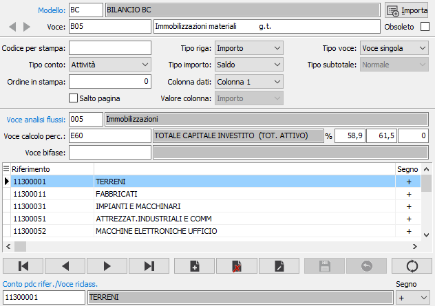
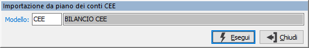

Voci di riclassificazione

MODELLO: indica il modello di riclassificazione a cui appartiene la voce. Sul campo sono attive le funzioni di ricerca (F9) sulla tabella stessa.
VOCE: codice alfanumerico di 10 caratteri per indicare la voce di riclassificazione. Sul campo sono attive le funzioni di ricerca (F9) sulla tabella stessa.
DESCRIZIONE: campo alfanumerico di 240 caratteri per la descrizione della voce.
CODICE PER STAMPA: contiene il codice che si vuole stampare sul bilancio al posto del codice voce.
TIPO CONTO: combo box per identificare la tipologia della voce. Valori possibili: Attività, Passività, Conto economico.
ORDINE IN STAMPA: indica il numero d'ordine valido per l'ordinamento in fase di stampa del bilancio.
SALTO PAGINA: definisce se in fase di stampa del bilancio dopo la stampa della voce deve essere effettuato un salto pagina (casella con segno di spunta).
TIPO RIGA: definisce il tipo di riga assegnato alla voce: di importo o descrittiva.
TIPO IMPORTO: indica il tipo di importo della voce, utilizzato in fase di stampa del bilancio per considerare l'importo dei conti associati in relazione al segno: dare, avere, saldo.
COLONNA DATI: indica la colonna di stampa: nessuna, colonna 1, colonna 2.
VALORE COLONNA: definisce cosa stampare nella colonna: importo o linea.
TIPO VOCE: indica il tipo di voce: singola, riferita a conti del piano dei conti di riferimento, oppure subtotale, riferita ad altre voci.
TIPO SUBTOTALE: nel caso di voce di subtotale indica il tipo di subtotale: normale, utile o perdita.
VOCE ANALISI FLUSSI: indicare il codice relativo alla voce di analisi flussi da associare alla voce di bilancio; questo dato è utilizzato nella procedura di analisi flussi per creare le aggregazioni delle voci di bilancio da visualizzare in forma grafica. Il campo è attivo solo per le voci singole. Sul campo sono attive le funzioni di ricerca (F9) e manutenzione (CTRL+W) sulla tabella stessa.
OBSOLETO: flag attivabile dall’utente per inibire il possibile utilizzo dell’elemento di tabella in esame nelle successive transazioni. Spuntando la casella sarà automaticamente assegnata alla data obsolescenza la data di sistema.
I campi "Voce calcolo percentuale", "Percentuali" e "Voce bifase" non sono attualmente utilizzati.
La sezione inferiore della maschera contiene i riferimenti al piano dei conti riclassificato, nel caso in cui si tratti di voce singola, oppure i riferimenti ad altre voci di riclassificazione nel caso di subtotali. Inoltre è presente anche il segno che indica se sommare o sottrarre i valori.
Nel caso di voce subtotale è possibile con il doppio clic del mouse, sulla voce presente nella griglia dei riferimenti, è possibile visualizzare la sua manutenzione; si attiveranno i bottoni freccia accanto al codice voce che permettono di spostarsi avanti ed indietro tra le voci di tipo subtotale richiamate in questa sessione.
Il pulsante Importa consente di effettuare la generazione delle voci, associate al modello richiesto tramite la finestra sottostante, importando i codici del piano dei conti CEE.
